Sesiones 6–7
Un transistor es un dispositivo electrónico semiconductor que cumple funciones de amplificación, conmutación o regulación de señales eléctricas. Es decir, puede funcionar como un amplificador o como un interruptor que podemos controlar con electricidad. Consiste en un pequeño trozo de material semiconductor con al menos tres terminales para la conexión a un circuito externo.
La historia del transistor se remonta a la década de 1940, cuando un equipo de investigadores de los Laboratorios Bell, liderado por William Shockley, John Bardeen y Walter Brattain, desarrolló el primer transistor funcional en diciembre de 1947. Este dispositivo, hecho de germanio y con una configuración de punto de contacto, reemplazó las grandes y frágiles válvulas de vacío utilizadas en la época, que eran los componentes electrónicos que se utilizaban para amplificar, conmutar, o modificar una señal eléctrica.
Este avance revolucionario permitió la miniaturización de los circuitos electrónicos y allanó el camino para el desarrollo de la electrónica moderna. En 1956, los investigadores Bell recibieron el Premio Nobel de Física por su invención del transistor.
Posteriormente, la industria de semiconductores evolucionó rápidamente, llevando a la introducción de nuevos tipos de transistores, como los bipolares y los de efecto de campo, y dando lugar a la era de la electrónica digital y de consumo masivo de dispositivos electrónicos. Desde entonces, los transistores han sido fundamentales en el desarrollo de tecnologías como los ordenadores, los teléfonos móviles, los dispositivos médicos y muchos otros dispositivos electrónicos que forman parte de nuestra vida cotidiana.
Tipos de transistores
Existen varios tipos de transistores, cada uno con características y aplicaciones específicas. Estos son los principales tipos de transistores y sus usos:
- Transistores Bipolares (BJT - Bipolar Junction Transistor)
-
NPN (Negativo-Positivo-Negativo) y PNP (Positivo-Negativo-Positivo) son los dos tipos principales.
Se utilizan en aplicaciones de amplificación de señales, como en etapas de amplificación de audio y radiofrecuencia, además de en interruptores de baja potencia. - Transistores de Efecto de Campo (FET - Field Effect Transistor)
-
Los tipos más comunes son MOSFET (Transistor de Efecto de Campo de Metal-Óxido-Semiconductor) y JFET (Transistor de Efecto de Campo de Unión).
Se utilizan en aplicaciones de amplificación y conmutación de señales, así como en circuitos integrados digitales, tales como en memorias y microprocesadores.
- Transistores de Unión Bipolar de Puerta Aislada (IGBT - Isolated Gate Bipolar Transistor):
-
Combina características de los transistores bipolares y de efecto de campo.
Se utilizan en aplicaciones de alta potencia, como en sistemas de control de motores, inversores de potencia y fuentes de alimentación conmutadas. - Transistores de alta movilidad de electrones (HEMT - High electron mobility transistor)
-
También conocidos como FET de Heteroestructura (HFET - Heterostructure FET).
Se utilizan en aplicaciones de alta frecuencia, como en dispositivos de comunicación de radiofrecuencia y en amplificadores de microondas.
En este curso nos vamos a centrar en el estudio de los transistores de unión bipolar.
El transistor BJT
Un transistor de unión bipolar (BJT) está formado por dos uniones PN en un solo cristal semiconductor, separados por una región muy estrecha. De esta manera quedan formadas tres regiones:
- Emisor, que se diferencia de las otras dos por estar fuertemente dopada, comportándose como un metal. Su nombre se debe a que esta terminal funciona como emisor de portadores de carga.
- Base, la intermedia, muy estrecha, que separa el emisor del colector.
- Colector, de extensión mucho mayor.
Según el tipo de dopado de cada región, podemos tener dos clases de transistores BJT:
- PNP: emisor tipo P, base tipo N, colector tipo P
- NPN: emisor tipo N, base tipo P, colector tipo N
Cada región del semiconductor está conectada a un terminal, denominado igual que ella: emisor (E), base (B) o colector (C). En esta imagen puedes ver la estructura que tendría un BJT de tipo NPN:

Los símbolos de los dos tipos de transistores BJT son los siguientes:
| TRANSISTOR PNP | TRANSISTOR NPN |
 |
Como puedes ver, es sencillo identificar los tres terminales simplemente viendo los símbolos:
- Base: es el terminal central.
- Emisor: es el terminal que tiene una flecha.
- Si la flecha apunta hacia la base, es PNP.
- Sila flecha apunta hacia fuera del emisor, es NPN.
- Colector: es el tercer terminal que queda, sin flecha.
En este vídeo tienes una explicación muy buena de cómo funcionan estos tipos de transistores y del aspecto que tienen físicamente:
Aunque los dos tipos de transistores de unión funcionan bajo el mismo principio y lo único que los diferencia son los sentidos de los voltajes y corrientes, para no complicar las cosas nos vamos a centrar en uno solo de ellos: el transistor NPN.
El transistor de unión NPN
En el transistor BJT de tipo NPN las corrientes que pueden circular por sus terminales llevan el siguiente sentido (recuerda que siempre utilizamos el criterio de sentido convencional de la corriente):
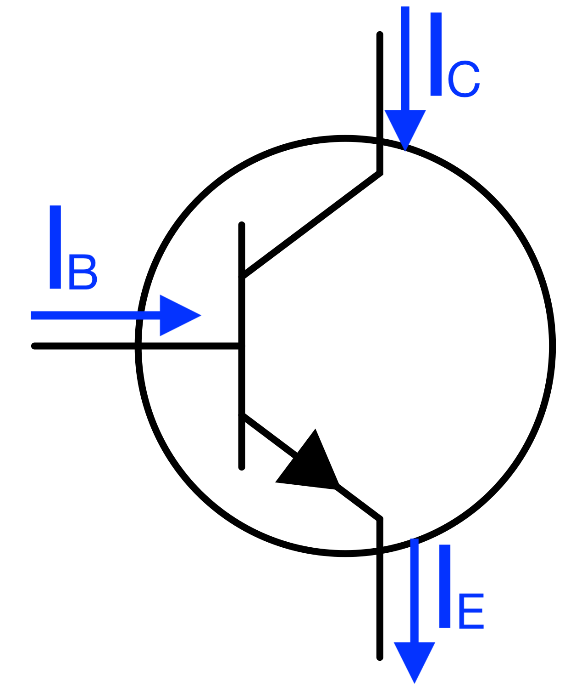
Como se puede ver, siempre se cumple que:En la práctica, IC ≈ IE, ya que IB es muy pequeña en comparación con ambas.
En un transistor la corriente principal es la que circula entre el colector y el emisor (IC ≈ IE), activando el dispositivo de salida conectado al circuito. Para que esto suceda es necesario que circule una corriente a través de la base del transistor (IB), si esto no ocurre, el transistor no permitirá el paso de corriente entre el colector y el emisor y por lo tanto el circuito no funcionará. Para comprender mejor el funcionamiento del transistor vamos a analizar el siguiente circuito:
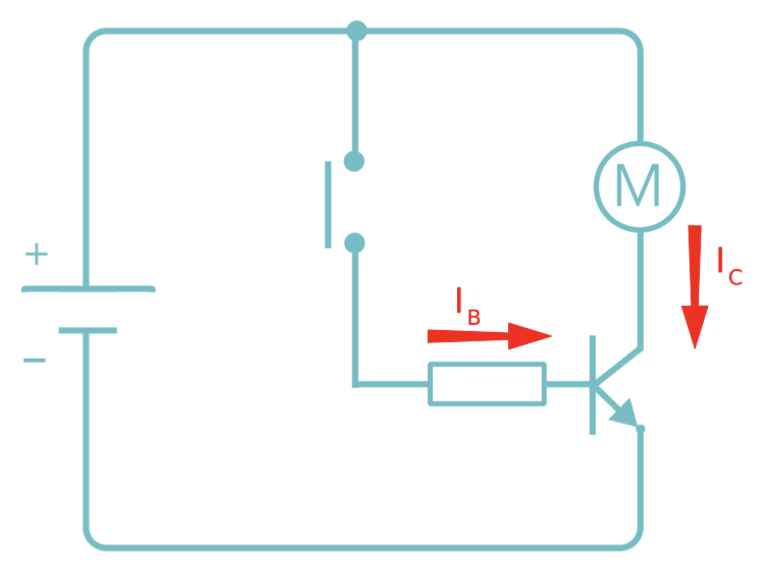
Tenemos una pila que alimenta un circuito con un motor, un transistor, una resistencia y un pulsador. Queremos que la corriente pase por el motor, es decir, que haya intensidad en el colector (IC), y tenemos dos posibilidades, que el pulsador esté accionado o no:- No accionamos el pulsador: como por la base no entra corriente, no es posible que la corriente pase del colector al emisor, y por lo tanto el motor no gira. En este caso se dice que el transistor está en corte.
- Accionamos el pulsador: ahora entra corriente por la base (IB) que hará que el transistor permita el paso de corriente del colector al emisor, y por lo tanto que el motor gire, se dice que el transistor está en activa.
Con este sencillo circuito podemos entender el funcionamiento básico del transistor, aunque no es muy útil, ya que si ponemos el pulsador en serie con el motor el efecto sería exactamente el mismo, realmente el transistor no nos aporta nada útil.
Hacemos ahora un pequeño cambio, eliminamos el pulsador y la resistencia, y colocamos una LDR (resistencia que cambia su valor óhmico con la luz). Cuando la LDR recibe luz su resistencia disminuye, y cuando la LDR está en oscuridad su resistencia aumenta.
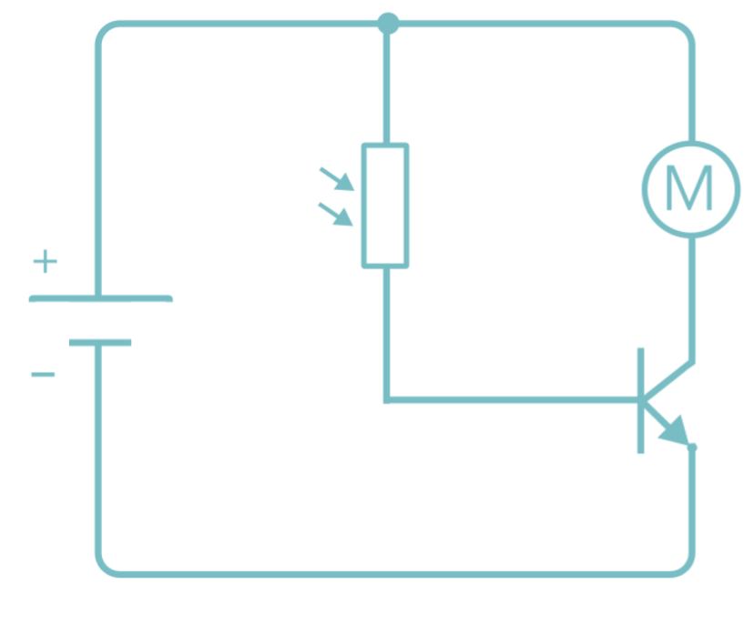
Si montamos físicamente este circuito y lo analizamos, encontramos los siguientes casos:Con oscuridad
La LDR ofrece una gran resistencia, por lo que por la base casi no hay intensidad, IB ≈ 0, el transistor está en corte, y el motor no gira. La intensidad del colector es cero (IC = 0):
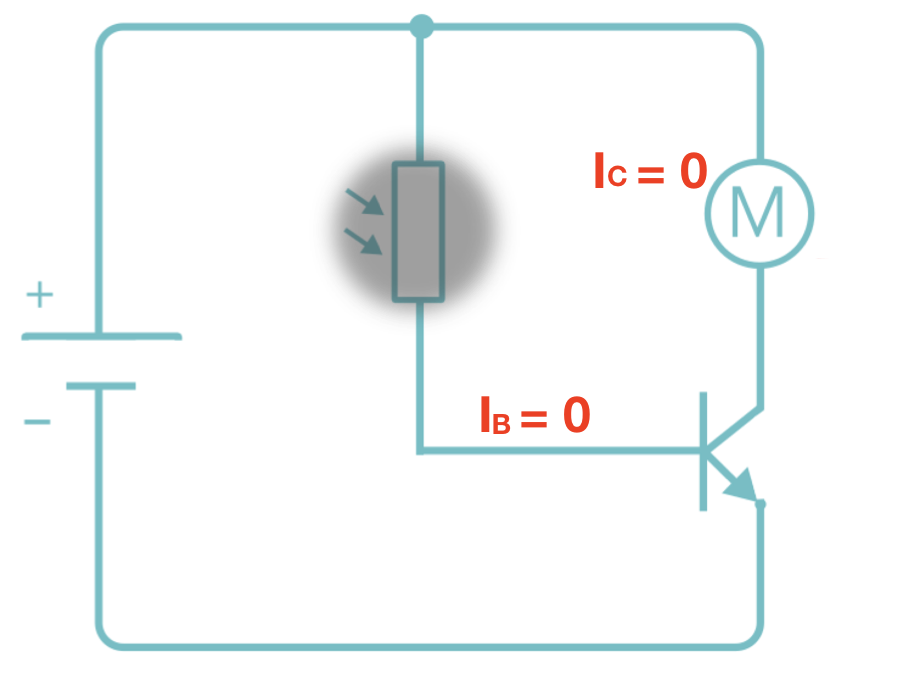
Con luz
La LDR disminuye su resistencia, por lo que aumenta la intensidad de la base hasta que el transistor comienza a conducir corriente entre colector y emisor. Ahora el transistor está en activa. Aparece intensidad por el colector y el motor empieza a girar.
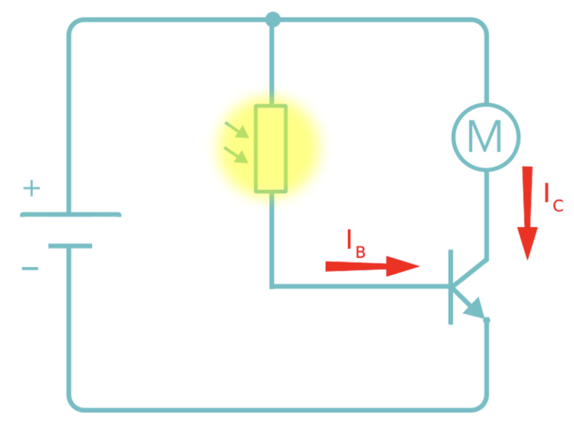
Si aumentamos más la luz, la resistencia de la LDR disminuye y la IB aumenta. Si disminuimos la luz, la resistencia aumenta y la IB disminuye. Medimos la corriente de base y la corriente de colector en varios momentos y observamos lo siguiente:
| NIVEL DE LUZ | Valor de IB | Valor de IC |
| BAJO | 2 mA | 400 mA |
| MEDIO | 3 mA | 600 mA |
| ALTO | 4 mA | 800 mA |
Como ves, el valor de IC siempre es proporcional al de IB. La constante de proporcionalidad se denomina ganancia en corriente del transistor y se designa mediante la letra griega beta (β), o bien mediante hFE.
La ganancia de corriente para un transistor BJT en zona de trabajo activa es, por lo tanto:
En este ejemplo, el transistor tiene una β = 200, pero hay otros transistores con otros valores de ganancia. En la hoja de características del fabricante se encuentra la ganancia de cada transistor, entre otras muchas propiedades.
Con mucha más luz
Si seguimos aumentando el nivel de luminosidad, la corriente de base sigue aumentando. Como ya hemos visto que la corriente de colector es proporcional a ella (IC = β·IB), podemos esperar que siga aumentando IC. Sin embargo, llega un momento en que, por más que aumentemos IB ya no aumenta IC.
Imagina que, por ejemplo, el valor de IC se queda en 850 mA por más que siga aumentando IB. El transistor no puede proporcionar más corriente de colector y ya no se cumple la fórmula anterior. Decimos que el transistor ha entrado en saturación.
Podemos resumir en una tabla el funcionamiento observado y los valores medidos en el circuito para diversos estados de funcionamiento:
| NIVEL DE LUZ | IB | MOTOR | IC | ESTADO DEL TRANSISTOR |
| 0 % | 0 mA | PARADO | 0 mA | CORTE |
| 5 % | 1 mA | PARADO | 0 mA | CORTE |
| 20 % | 2 mA | GIRA DESPACIO | 400 mA | ACTIVA |
| 30 % | 3 mA | AUMENTA VELOCIDAD | 600 mA | ACTIVA |
| 40 % | 4 mA | AUMENTA VELOCIDAD | 800 mA | ACTIVA |
| 50 % | 5 mA | VELOCIDAD MÁXIMA | 850 mA | SATURACIÓN |
| 60 % | 6 mA | VELOCIDAD MÁXIMA | 850 mA | SATURACIÓN |
| 70 % | 7 mA | VELOCIDAD MÁXIMA | 850 mA | SATURACIÓN |
Zonas de trabajo de un transistor
Como hemos visto, existen tres zonas posibles de trabajo de un transistor:
Zona de CORTE
La zona de corte es el estado en el que el transistor BJT no está conduciendo corriente entre su colector y su emisor. En este estado, el transistor está "apagado" y actúa como un circuito abierto entre estos dos terminales. Esto significa que no hay flujo de corriente a través del transistor, y el dispositivo tiene una alta resistencia entre el colector y el emisor.
La zona de corte se alcanza cuando la tensión aplicada entre la base y el emisor (VBE) es menor que el umbral necesario para que el transistor comience a conducir. En un BJT de tipo NPN, esto significa que la base debe estar a un potencial más bajo que el emisor en al menos aproximadamente 0.7 voltios (VBE < 0,7 V).
Cuando el transistor está en la zona de corte:
- No hay corriente de colector-emisor significativa, lo que significa que el transistor no está conduciendo (IC = IE = 0)
- La corriente de base (IB) es muy baja, ya que no hay flujo de corriente importante a través de la unión base-emisor (IB ≈ 0).
- La resistencia entre colector y emisor es muy alta, por lo que la tensión entre colector y emisor (VCE) puede ser de bastantes voltios y la establecerá el circuito externo.
Zona ACTIVA
La zona activa es el estado típico de funcionamiento de un transistor BJT cuando se utiliza como amplificador lineal de señales. En este estado, el transistor controla la corriente de colector en función de la corriente de base, lo que permite la amplificación de señales.
Hay corriente en la base y en el colector siendo ambas proporcionales. Se cumple la fórmula IC = β·IB.
Cuando el transistor está en zona activa:
-
La corriente de la base controla la corriente del colector: la corriente que fluye entre el colector y el emisor está controlada por la corriente que fluye entre la base y el emisor. La corriente de base es la corriente que controla la cantidad de corriente que fluye a través del transistor, y la relación IC = β·IB es fundamental para la operación del transistor como amplificador.
-
Ganancia de corriente controlada: En la zona activa, el transistor BJT puede amplificar señales eléctricas. La amplificación de señal se logra mediante la relación entre la corriente de colector y la corriente de base, conocida como ganancia de corriente (β). Por ejemplo, si la ganancia de corriente de un transistor es 100, significa que un pequeño cambio en la corriente de base produce un cambio 100 veces mayor en la corriente de colector.
-
La tensión base-emisor (VBE) es mayor que el umbral de conducción: En la zona activa, la tensión aplicada entre la base y el emisor (VBE) es mayor que el umbral necesario para que el transistor comience a conducir. Para un transistor BJT de tipo NPN, esto generalmente es al menos aproximadamente 0.7 voltios.
Zona de SATURACIÓN
En este estado, el transistor está completamente encendido y permite un flujo máximo de corriente entre su colector y su emisor.
Para que un transistor BJT entre en la zona de saturación, la tensión aplicada entre la base y el emisor (VBE) debe ser suficientemente alta para que el transistor conduzca completamente, y la tensión entre el colector y el emisor (VCE) debe ser lo más baja posible. En la práctica, esto significa que la corriente de base (IB) debe ser lo suficientemente alta para "saturar" la unión base-emisor y permitir que la corriente fluya libremente del colector al emisor.
Cuando el transistor está en la zona de saturación:
-
La corriente de colector (IC) es máxima y está limitada principalmente por la resistencia de carga externa.
-
La caída de voltaje entre el colector y el emisor (VCE) es mínima, típicamente de unos 0,2 voltios.
-
La corriente de base (IB) es lo suficientemente alta como para "saturar" la unión base-emisor, lo que permite un flujo máximo de corriente entre el colector y el emisor.
Aplicaciones básicas del transistor
Teniendo en cuenta las tres zonas de funcionamiento, el transistor puede utilizarse para dos finalidades muy distintas:
Uso como AMPLIFICADOR
Una de las aplicaciones más comunes de los transistores BJT es amplificar señales eléctricas. Para trabajar como amplificador, hay que diseñar el circuito de tal manera que el transistor funcione en todo momento en zona activa.
La corriente de colector IC será igual que la de base IB, pero multiplicada por la ganancia β del transistor.
Polarización del transistor
Si el transistor entra en saturación en algún momento, la señal se verá recortada y ya no será igual que la original, por lo que la amplificación tendrá errores. Si esto ocurre, por ejemplo, en un amplificador de audio, esas distorsiones se notan claramente en el sonido resultante, que pierde mucha calidad. Decimos que la señal está distorsionada. Igualmente, tampoco podemos permitir que el transistor entre en corte, pues dejará de amplificar y la señal de salida se hará cero cunque la corriente de base no sea cero.
- Cuando el transistor está en corte, su tensión colector-emisor (VCE) será prácticamente la de la fuente de alimentación del circuito (VCE = VCC).
- Cuando el transistor está en saturación, su tensión colector emisor es muy pequeña (del orden de 0,2 V), por lo que podemos considerar que VCE ≈ 0.
Por lo tanto, para evitar que el transistor entre en corte o en saturación, se emplean unas resistencias externas que se calculan para que la VCE esté lo más alejada posible de los dos valores extremos, es decir, para que VCE ≈ V/2. Existen diferentes circuitos de polarización:
- Polarización fija
-
Se utilizan solo dos resistencias, una en la base (RB) y otra en el colector (RC). Es el circuito más simple, pero es muy inestable y suele dar problemas con la temperatura.
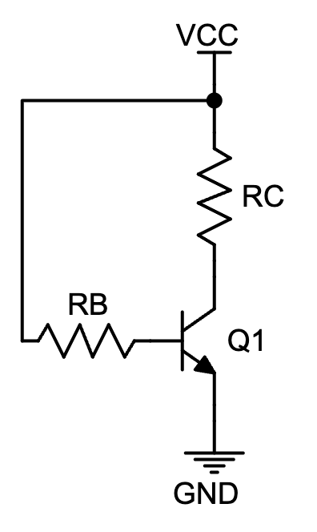
- Polarización por realimentación del emisor
-
Para mejorar la estabilidad del circuito anterior, se puede añadir una resistencia en el emisor (RE). Así, si por alguna razón la corriente aumenta demasiado, la tensión en el emisor aumentará (por la caída de tensión en RE), por lo que VBE será menor y la corriente en la unión base-emisor disminuirá, disminuyendo la corriente del transistor y evitando la saturación.
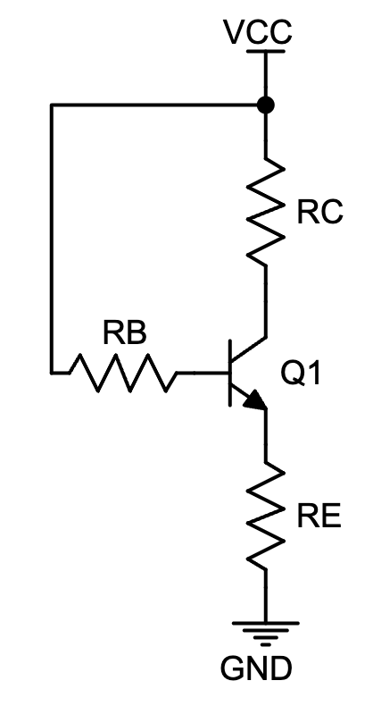
- Polarización por realimentación del colector
-
Análogamente, podemos realimenta la tensión en el colector si conectamos la resistencia de base directamente al terminal de colector. Si la corriente de colector aumenta, la tensión del colector disminuye (por la caída en la resistencia RC) y, por tanto, la corriente de base también disminuirá, corrigiéndose ese aumento de IC.
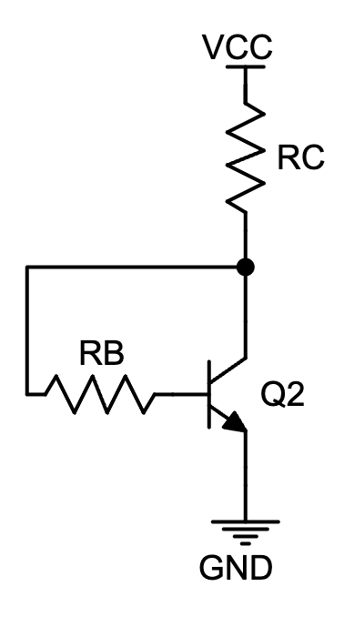
- Polarización universal
-
Es el circuito más estable, pues combina la realimentación de emisor y la de colector. Consiste en trasladar a la base tanto la tensión de colector (a través de una RB1) como la de emisor (a través de una RB2).
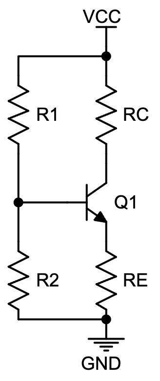
Configuración de la entrada y la salida
Existen tres posibles configuraciones para conectar un transistor como amplificador: base común, emisor común y colector común:
- Base común
-
La señal de entrada se aplica entre el emisor y la base, mientras que la de salida se obtiene entre el colector y la base (la base aparece en las dos, por eso se llama "base común").
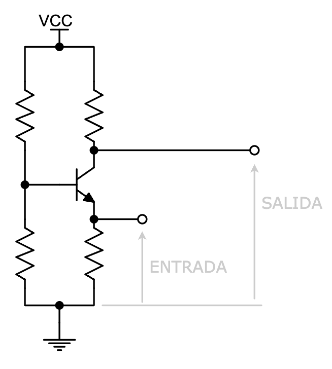
En esta configuración observamos lo siguiente:
- Prácticamente no obtenemos amplificación de corriente: como la corriente de entrada es IE y la de salida es IC, y sabemos que, en un transistor, IE ≈ IC, no tenemos ganancia en corriente de la señal.
- Sí tenemos amplificación de la tensión, puesto que VBE es pequeño (del orden de 0,7 V), mientras que VCB puede ser bastante elevada.
- Este montaje tiene un elevado ancho de banda, lo que significa que es capaz de amplificar señales tanto de bajas como de altas frecuencias. Esto los hace especialmente indicados como amplificadores de la señal de cualquier antena.
- Emisor común
-
La señal de entrada se aplica entre la base y el emisor, mientras que la de salida se obtiene entre el colector y el emisor.

En este caso, observamos que:
- Tenemos amplificación de corriente: al ser la entrada IB y la salida IC, amplificamos la señal con la ganancia en corriente del transistor (β = IC/IB)
- También tenemos amplificación en tensión, pues la entrada es VBE, que es pequeña (unos 0,7 V) y la salida es VCE que puede ser de varios voltios.
- El ancho de banda es menor que en la configuración de emisor común, por lo que se utilizan para amplificar frecuencias más concretas.
- Colector común
-
La señal de entrada se aplica entre la base y el colector, mientras que la de salida se obtiene entre el colector y el emisor.
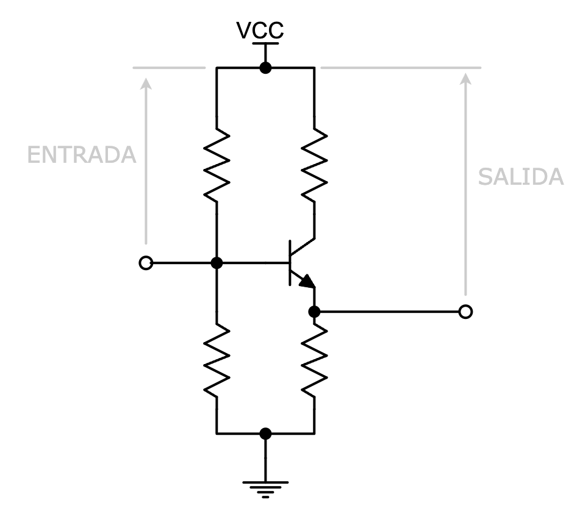
En este caso, observamos que:
- Tenemos amplificación de corriente: al ser la entrada IB y la salida IE, amplificamos la señal prácticamente con la ganancia en corriente del transistor (β = IC/IB ≈ IE/IB)
- No tenemos amplificación en tensión, pues la entrada es VCB y la salida es VCE . La diferencia entre estas dos tensiones es VBE, que es muy pequeña (0,6-0,7 V), por lo que son prácticamente iguales y no hay amplificación.
La configuración más común para utilizar un BJT como amplificador es la configuración de emisor común. En esta configuración, tenemos amplificación tanto de corriente como de tensión. La base está polarizada positivamente con respecto al emisor, de modo que la corriente de base controla la corriente de colector. Aquí tienes un ejemplo de circuito amplificador en emisor común, con polarización universal:
La fuente da un voltaje máximo de 0,5 V, mientras que a la carga llegan casi 5 V.
Aplicaciones
Se utilizan en etapas de amplificación de baja, media o alta potencia en una variedad de dispositivos, como amplificadores de audio, amplificadores de radiofrecuencia (RF), amplificadores de señal débil en instrumentación, entre otros.
Uso como INTERRUPTOR
Los transistores BJT también se utilizan para conmutar circuitos. En este caso, el transistor actúa como un interruptor electrónico que puede estar en uno de dos estados:
- Encendido (el transistor estará en saturación)
- Apagado (el transistor estará en corte).
En este caso hay que diseñar el circuito para que el transistor funcione todo el tiempo o bien en corte (para interrumpir totalmente la corriente) o bien en saturación (para permitir el máximo paso de corriente posible), nunca en activa.
La configuración más común para utilizar un BJT como interruptor es la configuración de emisor común. En esta configuración, el BJT se coloca entre la carga (el componente o dispositivo que se controla) y la tierra o el suministro de voltaje. La señal de control (que puede ser una señal digital o analógica) se aplica entre la base y el emisor. Aquí tienes un circuito de ejemplo, en el que la señal de control la simulamos con un interruptor manual:
Se usan en aplicaciones como interruptores electrónicos en circuitos digitales (la base de los ordenadores y la informática), controladores de motores, relés electrónicos, etc.
Ejemplos de circuitos con transistores
Vamos a ver algunos ejemplos de uso de transistores BJT en circuitos, lo que nos ayudará a entender mejor su funcionamiento. Posteriormente tendréis que montar vosotros mismos esos circuitos y comprobar su funcionamiento con componentes reales.
Alarma por desconexión
Montaje 1: alarma visual con LED
El esquema del circuito es el siguiente:
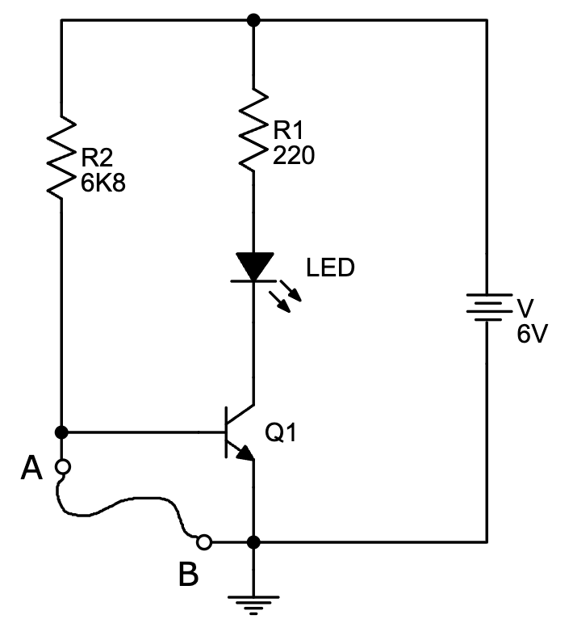
Funcionamiento
Entre los puntos A y B hay un cable que puede soltarse fácilmente. Cuando se corta el cable se dispara la alarma y se enciende el led.
- Mientras tenemos conectado el cable entre los puntos A y B, la unión base-emisor está cortocircuitada y, por lo tanto, no conduce corriente (VBE = 0). La intensidad de base IB = 0 y el transistor se comporta como un interruptor abierto.
- Cuando cortamos el cable, la base deja de estar a 0 V y la VBE puede aumentar sin problemas hasta los 0,6-0,7 V aproximadamente que se necesita para que la unión base-emisor conduzca y entre intensidad por la base. El transistor se satura y se comporta como un interruptor cerrado, con lo que el led se enciende.
Las resistencias se emplean para proteger al led (R1) y para limitar la corriente de base y proteger al transistor (R2).
Montaje 2: alarma acústica con zumbador
Si queremos modificar el circuito para que la alarma sea acústica, podemos usar un zumbador. El problema es que puede que el zumbador necesite una corriente muy alta para funcionar y el transistor no sea capaz de proporcionar tanta corriente.
En casos como este, podemos utilizar un relé , que puede activarse con una corriente típica del transistor para abrir o cerrar otro circuito por el que circule mucha más corriente para la carga que la demande.
El montaje quedaría así:

Funcionamiento
Cuando se corta el cable entre A y B se dispara la alarma y suena el zumbador.
El circuito es análogo al del montaje 1, con los siguientes cambios:
- El LED y su resistencia de protección se han sustituido por un relé y un diodo D1. La función del diodo D1 es proteger al transistor de una posible sobrecorriente al activarse el relé. Cuando se activa una bobina magnética puede aparecer una tensión bastante mayor que la de la fuente del circuito (en este caso 6 V). En ese caso el diodo D1 se polariza directamente y conduce la posible corriente hacia arriba, manteniendo el colector del transistor a una tensión controlada. Si en vez de un relé hubiéramos puesto un motor, también tendríamos que haber puesto un diodo de protección.
- Se ha añadido un zumbador en el circuito del contacto del relé. Cuando el relé está en reposo (tal y como está dibujado su símbolo), el zumbador está apagado. Cuando el relé conmuta, llega corriente al zumbador y suena.
Por lo tanto, el funcionamiento es igual al caso anterior:
- Cuando el cable está intacto, el transistor está en corte y no pasa corriente por el relé, por lo que el zumbador no suena.
- Cuando el cable se rompe el transistor entra en saturación, la corriente de colector pasa por el relé y hace que conmute su contacto, permitiendo el paso de corriente a través del zumbador, haciéndolo sonar.
Sensor de luz
Montaje 1: sensor de luminosidad
El circuito será el siguiente:
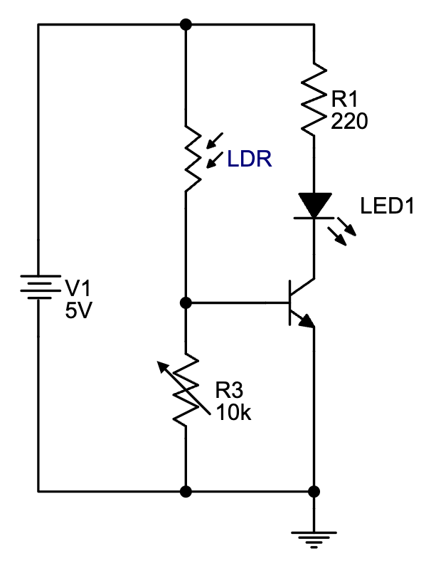
Funcionamiento
Cuando se ilumina lo suficiente la LDR, el LED se enciende. Si la LDR permanece a oscuras, el LED se apaga.
- Cuando la LDR está a oscuras, su resistencia es alta y la tensión en la base es demasiado pequeña para que el transistor conduzca.
- Cuando la LDR se ilumina su resistencia va bajando y, por tanto, la tensión en la base del transistor va subiendo, hasta que llega un momento en que llega a unos 0,7 V y el transistor comienza a conducir, encendiéndose el LED.
- El transistor comenzará a conducir en activa, por lo que la IC será proporcional a la IB. Así, a medida que la LDR se ilumine más, su resistencia bajará y la corriente por la base aumentará, brillando más el LED. Esto ocurrirá hasta que el transistor sature, momento en que el LED ya tendrá su brillo máximo y no aumentará por más que aumentemos la luz sobre la LDR.
- El potenciómetro lo podremos regular para que el LED se ilumine con más o menos luz sobre la LDR. Nos sirve para ajustar la sensibilidad de nuestro circuito (mientras más resistencia tenga, menos luz necesitaremos para que el transistor conduzca).
Montaje 2: sensor de oscuridad
Si modificamos el circuito anterior y colocamos la LDR en el emisor y el potenciómetro en el colector, el circuito ahora funcionará al revés:

- Cuando la LDR está a oscuras, su resistencia es alta y la tensión en la base del transistor es suficiente para que entre en conducción y se encienda el LED.
- Cuando vamos iluminando la LDR su resistencia va disminuyendo, con lo que cada vez se va más corriente a través de ella y entra menos a la base del transistor. El LED cada vez ilumina menos. Cuando la corriente de base sea demasiado pequeña, el transistor se cortará y el LED se apagará del todo.
Sensor táctil con par Darlington
En este caso solo veremos un montaje, que es el de la siguiente figura:
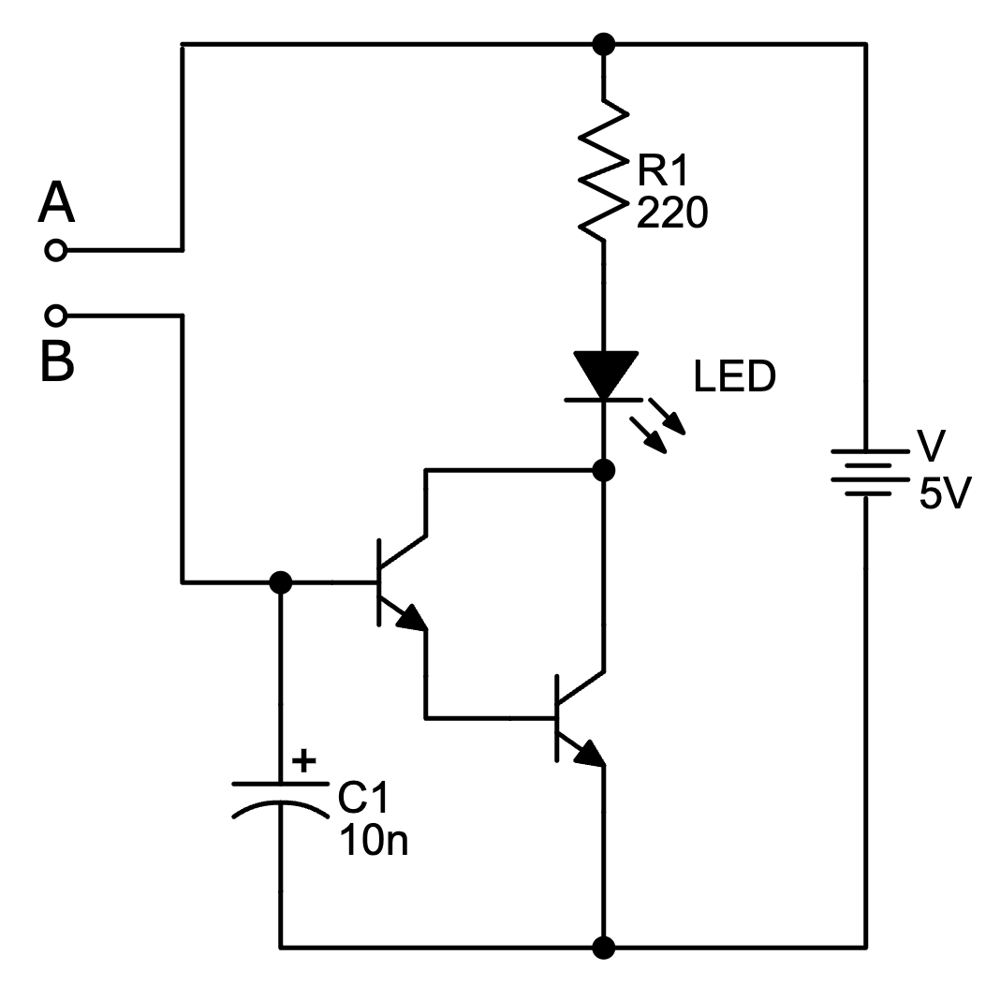
Funcionamiento
Al tocar con el dedo entre los puntos A y B, el LED se ilumina. Al quitar el dedo, el LED se apaga.
- Cuando no tocamos nada, la base del primer transistor está aislada, por lo que el transistor está cortado. Si el primer transistor está cortado, el segundo también lo estará y, por lo tanto, el LED estará apagado.
- Cuando tocamos entre A y B cerramos el circuito a través de la piel de nuestro dedo. Aunque la resistencia de la piel humana es grande, puede circular algo de corriente entre A y B y llegar a la base del primer transistor, haciendo que conduzca. Esa mínima corriente de base se amplifica con la β1 del primer transistor y se utiliza como corriente de base del segundo transistor, que vuelve a amplificarla ahora con su β2, con lo que la corriente que pasa por el LED es suficiente ya para hacerlo lucir.
El montaje con los dos transistores conectados de esta forma se llama conexión o par Darlington. Este montaje nos permite conseguir unas amplificaciones muy grandes, porque estamos combinando las ganancias en corriente de los dos transistores.
En efecto, cuando conduce el primer transistor, su corriente de colector es IC1 = β1·IB1. Su corriente de emisor será, por lo tanto: IE1 = IC1 + IB1 = β1·IB1 + IB1 = (β1 + 1)·IB1
Esta corriente de emisor del primer transistor es la corriente de base del segundo: IB2 = IE1 =(β1 + 1)·IB1
La corriente de colector del segundo transistor será, por lo tanto:
IC2 = β2·IB2 = β2·(β1 + 1)·IB1
Si consideramos el par Darlington como un solo transistor grande:

IC = IC1 + IC2 = β1·IB1 + β2·(β1 + 1)·IB1 = (β1·β2 + β1 + β2)·IB
Como las ganancias de los transistores son bastante mayores que 1, podemos aproximar la expresión anterior y decir que IC = β1·β2·IB . Por lo tanto, la ganancia de un par Darlington es, aproximadamente, el producto de las ganancias de los dos transistores que lo componen.
| βDARLINGTON ≈ β1·β2 |
Si, por ejemplo, las ganancias de los transistores son β1 = 100 y β2 = 50, la ganancia del par sería β = 5000.
Multivibrador astable
Consiste en un circuito como este:

La salida de este circuito sería la tensión obtenida en el terminal "Y", que será una onda cuadrada. Nosotros le hemos añadido unos LEDs para visualizar bien el funcionamiento cuando lo montemos con elementos reales, pero no son necesarios si usamos el circuito para su función primordial de generar ondas.
Veamos cómo funciona.
Cuando lo ponemos en marcha, parece no hacer nada durante los primeros instantes. Esto es porque la configuración del montaje es simétrica por lo que, si los componentes fueran ideales (perfectos, todos iguales, sin tolerancia ninguna), el circuito, efectivamente, se quedaría en reposo indefinidamente. Pero no es así: los componentes, dadas las características de la fabricación, son algo diferentes.
Al aplicar la tensión de alimentación (9 V), los dos transistores iniciarán la conducción, ya que sus bases reciben un potencial positivo a través de las resistencias R2 y R3, pero como los transistores no serán exactamente idénticos, por el propio proceso de fabricación y el grado de impurezas del material semiconductor, uno conducirá antes o más rápido que el otro.
Supongamos que es TR1 el que conduce primero. En estas condiciones el voltaje en su colector estará próximo a 0 voltios, por lo que C1 comenzará a cargarse a través de R2, creando al principio una muy pequeña diferencia de potencial entre sus placas y, por tanto, trasladando el voltaje próximo a 0 hasta la base de TR2, que se pondrá en corte.
Cuando el voltaje en C1 alcance los 0,6 V, el transistor TR2 comenzará a conducir, pasando su tensión de colector (salida Y del circuito) a nivel bajo (tensión próxima a 0V). El condensador C2, que se había cargado a través de R4 y de la unión base-emisor de TR1, se descargará ahora provocando el bloqueo de TR1 al bajar la tensión en su base.
C2 comienza a cargarse vía R3 y, al alcanzar la tensión de 0,6 V, provocará nuevamente la conducción de TR1, la descarga de C1, el bloqueo de TR2 y el pase a nivel alto (tensión próxima a Vcc (+) de la salida Y).
A partir de aquí la secuencia se repite indefinidamente, dependiendo los tiempos de conducción y bloqueo de cada transistor de las relaciones R2/C1 y R3/C2. Estos tiempos no son necesariamente iguales, por lo que pueden obtenerse distintos ciclos de trabajo actuando sobre los valores de dichos componentes.
A los pocos segundos el circuito se pone en marcha (se rompe la presunta simetría), y vemos cómo los LEDs se encienden alternativamente. En ningún caso se permanece indefinidamente en un estado, es decir, los estados "decaen" por sí mismos, no son estables (por lo tanto son "astables")
Es por esto que a este circuito se le llama multivibrador astable u oscilador, y es muy usado en electrónica, especialmente para generar señales PWM. En ese caso no se utilizan LEDs, que aquí están simplemente para que veamos cómo funciona el circuito cuando lo montemos con componentes reales.
Tarea 5 - Montajes de circuitos con transistor
Esta tarea consiste en montar físicamente los circuitos de ejemplo que acabas de ver. Los transistores que utilizaremos en el taller serán, en general, distintos de los de los ejemplos, por lo que las resistencias de polarización pueden tener valores algo diferentes. En todo caso, intentad utilizar las resistencias más parecidas posibles y ya las cambiaréis por otros valores si es necesario.
Hay que montar cada uno de los circuitos de ejemplo estudiados:
Ejercicios con transistores
Para resolver ejercicios de transistores utilizaremos las siguientes fórmulas:
- Ganancia del transistor en corriente (sólo si está en activa): IC = β · IB
- Segunda lety de Kirchhoff en el transistor: IE = IC + IB
- Leyes de Kirchhoff y de Ohm en el circuito externo al transistor.
En ocasiones, no sabremos en qué estado se encuentra el transistor, por lo que tendremos que suponer que está en alguno de los estados posibles (corte, activa o saturación) y, si todos los valores salen compatibles, habremos acertado, mientras que si obtenemos alguna incongruencia, es que no está en ese estado y tenemos que probar con otro.
Dependiendo de en qué estado esté el transistor, tendremos en cuenta lo siguiente:
- En corte
-
Para que esté en corte, debe cumplirse que:
- IB ≈ 0
- VBE < 0,6 V
- En activa
-
Se cumple:
- IC = β · IB
- VBE ≈ 0,6 - 0,7 V
- En saturación
-
Se cumple:
- IC < β · IB
- VBE ≈ 0,7 V (normalmente tendrás el dato VBE(sat))
- VCE ≈ 0,2 V (normalmente tendrás el dato VCE(sat))
Con estas premisas, podremos realizar nuestros ejercicios. Haremos uno de ejemplo paso a paso:
Ejemplo resuelto
|
Ejercicio resuelto: En el circuito de la figura, el transistor tiene las siguiente características: VCE(sat) = 0,2 V; VBE(sat) = 0,7 V; β = 60. Calcular las corrientes IB, IC, IE y el estado del transistor en los siguientes casos:
|
Solución
Caso (a): Interruptor cerrado.
- Al cerrar el interruptor, estamos cortocircuitando la base del transistor a tierra, por lo que la tensión base-emisor será de 0 V.
- Como VBE = 0, el transistor está en corte.
- Al estar cortado el transistor, IB = IC = IE = 0
Por lo tanto, la solución a este apartado sería:
|
IB = 0 mA IC = 0 mA IE = 0 mA Transistor en CORTE |
Caso (b): interruptor abierto
- Ahora el transistor conducirá, pero no sabemos a priori si estará en activa o en saturación. Tendremos que suponer uno de los dos estados y comprobar luego si estábamos en lo cierto o no.
- Como el problema nos da datos de tensiones de saturación del transistor, vamos a suponer que está en ese estado y ya conoceremos las tensiones de las uniones B-E y C-E. Sería así:
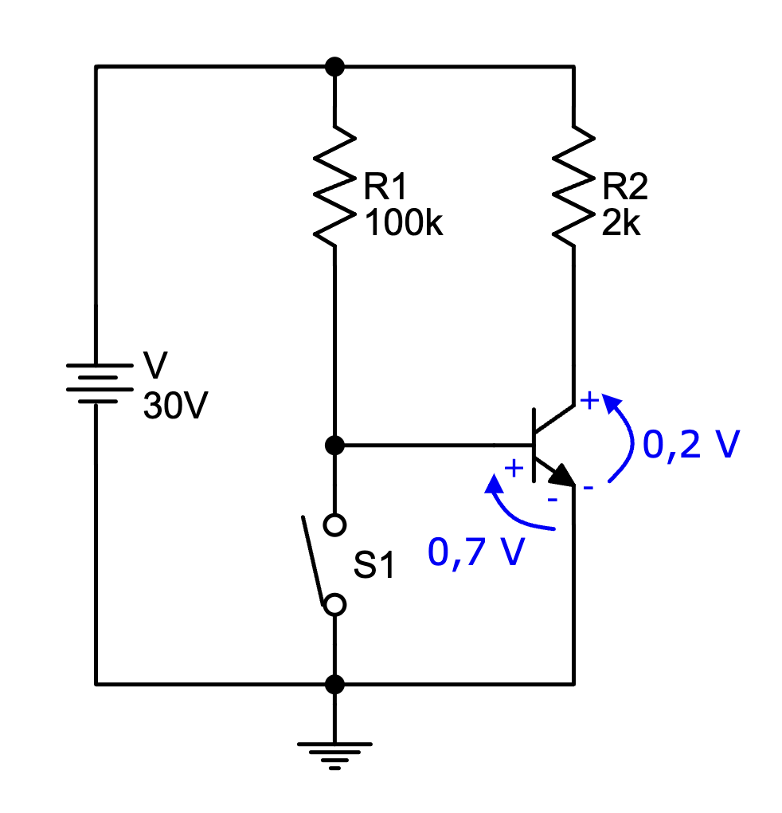
Para calculas las tres corrientes del transistor vamos a usar tres ecuaciones de Kirchhoff:
1ª LK en el transistor:
2ª LK en dos mallas del circuito. Vamos a elegir dos mallas en las que estén las tensiones datos del problema: la malla exterior del circuito y la malla que incluye la unión base-emisor. Las tienes indicadas en esta figura:
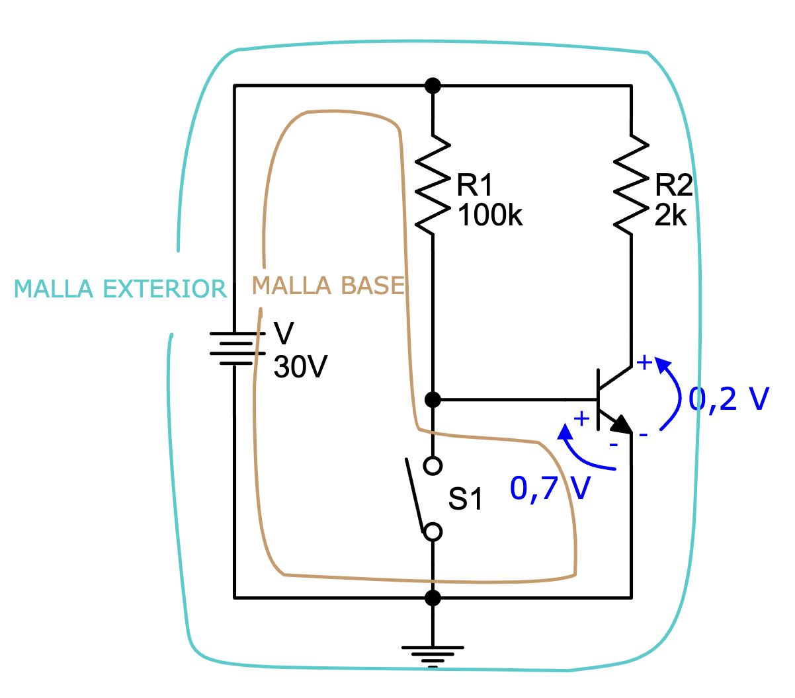
2ª LK en malla exterior:
Se puede despejar directamente el valor de IC:
2ª LK en la malla de la base:
Despejamos directamente la corriente de base:
- Como tenemos IB e IC, podemos comprobar si estamos efectivamente en saturación o no. Para que esté en saturación, debe cumplirse que β·IB > IC. Lo calculamos:
Se comprueba que hemos acertado y que, efectivamente, el transistor está en saturación.
- Calculamos la última corriente con la 1ª LK:
Por lo tanto, la solución a este apartado es:
|
IB = 0,293 mA IC = 14,9 mA IE = 15,193 mA Transistor en SATURACIÓN |